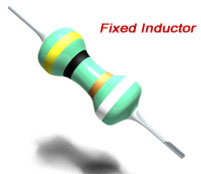

Theory
Self Inductance
Self Inductance of a Coil
Formula
Video on Inductance Theory
Unit
Mutual Inductance
Definition
Coefficient
Formula
Mutual Inductance of Coils
Inductances in Series
Types of Inductor
Ferromagnetic Core Inductor
Air Core Inductor
Toroidal Core Inductor
Laminated Core Inductor
Powdered Iron Core
Coupled Inductor
RF Inductor
Multi Layer Inductor
Molded Inductor
Choke
Applications of Inductors
What is Inductor?
Before knowing what is inductor we should first know the definition of inductance.
Definition of Inductance
If a changing flux is linked with a coil of a conductor there would be an emf induced in it. The property of the coil of inducing emf due to the changing flux linked with it is known as inductance of the coil. Due to this property all electrical coil can be referred as inductor. In other way, an inductor can be defined as an energy storage device which stores energy in form of magnetic field.
Theory of Inductor
A current through a conductor produces a magnetic field surround it. The strength of this field depends upon the value of current passing through the conductor. The direction of the magnetic field is found using the right hand grip rule, which shown. The flux pattern for this magnetic field would be number of concentric circle perpendicular to the detection of current.
Now if we wound the conductor in form of a coil or solenoid, it can be assumed that there will be concentric circular flux lines for each individual turn of the coil as shown. But it is not possible practically, as if concentric circular flux lines for each individual turn exist, they will intersect each other. However, since lines of flux cannot intersect, the flux lines for individual turn will distort to form complete flux loops around the whole coil as shown. This flux pattern of a current carrying coil is similar to a flux pattern of a bar magnet as shown.
Now if the current through the coil is changed, the magnetic flux produced by it will also be changed at same rate. As the flux is already surrounds the coil, this changing flux obviously links the coil. Now according to Faraday’s law of electromagnetic induction, if changing flux links with a coil, there would be an induced emf in it. Again as per Lenz’s law this induced emf opposes every cause of producing it. Hence, the induced emf is in opposite of the applied voltage across the coil.
Definition of Self Inductance
Whenever current flows through a circuit or coil, flux is produced surround it and this flux also links with the coil itself. Self induced emf in a coil is produced due to its own changing flux and changing flux is caused by changing current in the coil. So, it can be concluded that self-induced emf is ultimately due to changing current in the coil itself. And self inductance is the property of a coil or solenoid, which causes a self-induced emf to be produced, when the current through it changes.
Explanation of Self Inductance of a Coil
Whenever changing flux, links with a circuit, an emf is induced in the circuit. This is Faraday’s laws of electromagnetic induction. According to this law,
")
Where, e is the induced emf. N is the number of turns. (dφ/dt) is the rate of change of flux linkage with respect to time. The negative sign of the equation indicates that the induced emf opposes the change flux linkage. This is according to Len’z law of induction. The flux is changing due to change in current of the circuit itself. The produced flux due to a current, in a circuit, always proportional to that current. That means,
Where, i is the current in the circuit and K is the proportional constant.
Now, from equation (1) and (2) we get,
The above equation can also be rewritten as
Where, L (= NK) is the constant of proportionality and this L is defined as the self inductance of the coil or solenoid. This L determines how much emf will be induced in a coil for a specific rate of change of current through it.
Now, from equation (1) and (3), we get,
Integrating, both sides we get,
")
From the above expression, inductance can be also be defined as,
“If the current I through an N turn coil produces a flux of Ø Weber, then its self-inductance would be L”.
A coil can be designed to have a specific value of self-inductance (L). In the view of self-inductance, a coil or solenoid is referred as an inductor. Now, if cross – sectional area of the core of the inductor(coil) is A and flux density in the core is B, then total flux inside the core of inductor is AB.
Therefore, equation (4) can be written as
Now, B = μoμrH Where, H is magnetic field strength, µo and μr are permeability of free space and relative permeability of the core respectively. Now, H = mmf/unit length = Ni/l Where l is the length of the coil. Therefore,
Self Inductance Formula
Video presentation on theory of Inductor
Unit of Inductance
Which we derived at equation (3). Where, L is known is self induction of the circuit. In the above equation of inductance, if e = 1 Volt and (di / dt) is one ampere per second, then L = 1 and its unit is Henry. That means, if a circuit, produces emf of 1 Volt, due to rate of change of current through it, one ampere per second then the circuit is said to have one henry self inductance. This henry is unit of inductance.
Mutual Inductance
Inductance due to the current, through the circuit itself is called self inductance. But when a current flows through a circuit nearer to another circuit, then flux due to first circuit links to secondary circuit. If this flux linkage changes with respect to time, there will be an induced emf in the second circuit. Similarly, if current flows through second circuit, it will produced flux, and if this current changes, the flux will also change. This changing flux will link with first coil. Due to this phenomenon emf will be induced in the first coil. This phenomenon is known as mutual inductance. If current i1 flows through circuit 1 then emf e2 is induced in the nearby circuit is given by,
Where, M is the mutual inductance.
If current i2 flows through circuit 2, then emf e1 is induced in the nearby circuit 1 is given by,
Defination of Mutual Inductance
Mutual inductance may be defined as the ability of one circuit to produce an emf in a nearby circuit by induction when current in the first circuit changes. In reverse way second circuit can also induce emf in the first circuit if current in the second circuit changes.
Coefficient of Mutual Inductance
Let’s consider two nearby coils of turns N1 & N2 respectively. Let us again consider, current i1 flowing through first coil produces φ1. If this whole of the flux links with second coil, the weber-turn in the second coil would be N2φ1 due to current i1 in the first coil. From this, it can be said, (N2φ1)/i1 is the weber-turn of the second coil due to unit current in the first coil. This term is defined as co-efficient of mutual inductance. That means, mutual inductance between two coils or circuits is defined as the weber-turns in one coil or circuit due to 1 A current in the other coil or circuit.
Formula or Equation of Mutual Inductance
Now we have already found that, mutual inductance due to current in first coil is,

Again, if self inductance of first coil or circuit is L1, then,
Similarly, coefficient of mutual inductance due to current i2 in the second coil is,
Now, if self inductance of the second coil or circuit is, L2,
Now, multiplying (5) and (6), we get,
This is an ideal case, when whole changing flux of one coil, links to other coil. The value of M practically not equal to √(L1L2) as because whole flux of one coil does not link with other , rather, a part of flux of one coil, links with other coil. Hence practically,
This k is known as coefficient of coupling and this is the ratio of actual coefficient of mutual inductance to ideal (maximum) coefficient of mutual inductance. If flux of one coil is entirely links with other, then value of K will be one. This is an ideal case. This is not possible, but when K nearly equal to unity, that means, maximum flux of one coil links to other, the coils are said to be tightly coupled or closely coupled. But when no flux of one coil links with other, the value of K becomes zero (K = 0), then the coils are said to be very loosely coupled or isolated.
Mutual Inductance of two Solenoids or Coils
Let us assume two solenoids or coils A and B respectively.
Coil A is connected with an alternating voltage source , V. Due to alternating source connected to coil A, it will produce an alternating flux as shown. Now, if we connect on sensitive voltmeter across coil B, we will find a non zero reading on it. That means, some emf is induced in the coil B. This is because, apportion of flux produced by coil A, links with coil B and as the flux changes in respect of time, there will be an induced emf in the coil B according to Faraday’s law of electromagnetic induction. This phenomenon is called mutual induction. That means, induction of emf in one coil due to flux of other coil is mutual induction.
Similarly, if the alternating voltage source was connected to coil B and induced voltage is measured by connecting voltmeter across coil A, the voltmeter gives a non-zero reading. That means, in this case the emf will be induced in coil A due to flux linkage from coil B. Let us consider coil A and B have turns N1 & N2. If the entire flux of coil A links with coil B, then weber-turns of the coil B due to unit current of coil A, would be (N2φ1)/i1, where, φ1 & i1 is flux and current of coil A. As per definition this is nothing but mutual inductance of coil A & B, M. That is,
Similarly, if the current and flux of the coil B are i2 and φ2.
Inductances in Series
Let’s coil or inductance A and B are connected in series. The self inductance of coil A , is LA and that of coil B is LB. Now again consider, M is the mutual inductance between them. There may be two conditions.
- The direction of flux produced by both coil will be in same direction. In that case, the flux of coil B links will be coil A, will be in same direction with the flux produced by coil A, itself. Hence, the effective inductance of coil A will be LA + M.
At the same time, the flux of coil A, links with coil B will be in same direction with self flux of coil B. Hence, the effective inductance of coil B will be LB + M.
Hence total effective inductance of the series connected inductors A and B will be nothing but, - Now, if direction of instantaneous flux at coil A and B are in opposite, then flux of coil B linking with coil A, will be in opposite direction of flux produced by coil A itself. So, effective inductance of coil A will be LA - M.
In the same way, the flux of coil A which links with coil B, will be in opposite direction of self flux of coil B.
Hence, effective inductance of coil B will be, LB - M.So, total inductance in series in this case will be,
So, general form of equivalent inductance of two inductors in series in,
Types of Inductor
There are many types of inductors ; all differ in size, core material, type of windings, etc. so they are used in wide range of applications. The maximum capacity of the inductor gets specified by the type of core material and the number of turns on coil.
Depending on the value, inductors typically exist in two forms, fixed and variable. .The number of turns of the fixed coil remains the same. This type is like resistors in shape and they can be distinguished by the fact that the first color band in fixed inductor is always silver. They are usually used in electronic equipment as in radios, communication apparatus, electronic testing instruments, etc.
The number of turns of the coil in variable inductors , changes depending on the design of the inductor. Some of them are designed to have taps to change the number of turns. The other design is fabricated to have a many fixed inductors for which, it can be switched into parallel or series combinations. They often get used in modern electronic equipment.
Core or heart of inductor is the main part of the inductor. Some types of inductor depending on the material of the core will be discussed.
Ferromagnetic Core Inductor or Iron-core Inductors
This type uses ferromagnetic materials such as ferrite or iron in manufacturing the inductor for increasing the inductance. Due to the high magnetic permeability of these materials, inductance can be increased in response of increasing the magnetic field.At high frequencies it suffers from core loses, energy loses, that happens in ferromagnetic cores.
Air Core Inductor
Air cored inductor is the type where no solid core exists inside the coils. In addition, the coils that wound on nonmagnetic materials such as ceramic and plastic, are also considered as air cored. This type does not use magnetic materials in its construction.The main advantage of this form of inductors is that, at high magnetic field strength, they have a minimal signal loss. On the other hand, they need a bigger number of turns to get the same inductance that the solid cored inductors would produce. They are free of core losses because they are not depending on a solid core.
Toroidal Core Inductor
Toroidal Inductor constructs of a circular ring-formed magnetic core that characterized by it is magnetic with high permeability material like iron powder, for which the wire wounded to get inductor. It works pretty well in AC electronic circuits' application.Toridal Inductor
The advantage of this type is that, due to its symmetry, it has a minimum loss in magnetic flux; therefore it radiates less electromagnetic interference near circuits or devices. Electromagnetic interference is very important in electronics that require high frequency and low power.
Laminated Core Inductor
Laminated Core Inductor
This form gets typified by its stacks made with thin steel sheets, on top of each other designed to be parallel to the magnetic field covered with insulating paint on the surface; commonly on oxide finish. It aims to block the eddy currents between steel sheets of stacks so the current keeps flowing through its sheet and minimizing loop area for which it leads to great decrease in the loss of energy. Laminated core inductor is also a low frequency inductor. It is more suitable and used in transformer applications.
Powdered Iron Core
Its core gets constructed by using magnetic materials that get characterized by its distributed air gaps. This gives the advantage to the core to store a high level of energy comparing to other types. In addition, very good inductance stability is gained with low losses in eddy current and hysteresis. Moreover, it has the lowest cost alternative.
Powdered Iron CoreAnother Classification of Inductor
Coupled Inductor
It happens when inductors are related to each other by electromagnetic induction. Generally it gets used in applications as transformers and where the mutual inductance is required.
RF Inductor
Another name is radio frequency of RF inductors . This type operates at high frequency ranges. It is characterized by low current rating and high electrical resistance. However, it suffers from a proximity effect, where the wire resistance increases at high frequencies. Skin effect, where the wire resistance to high frequency is greater than the electrical resistance of current direct.
Multi-Layer Inductor
Here the wounded wire is coiled into layers. By increasing the number of layers, the inductance increases, but with increasing of the capacitance between layers.
Molded Inductor
The material for which it stands from, is molded on ceramic or plastic. Molded inductors are typically available in bar and cylindrical shapes with a variety option of windings.
Choke
The main purpose of it is to block high frequencies and pass low frequencies. It exists in two types; RF chokes and power chokes.
Applications of Inductors
In general there are a lot of applications due to a big variety of inductors . Here are some of them. Generally the inductors are very suitable for radio frequency, suppressing noise, signals, isolation and for high power applications.
More applications summarized here:
1. Energy Storage
2. Sensors
3. Transformers
4. Filters
5. MotorsThe use of inductors somehow is restricted due to its ability of radiation of electromagnetic interference. In addition, it is a side effect which makes inductor deviate a little bit from it is real behavior.
 by
by